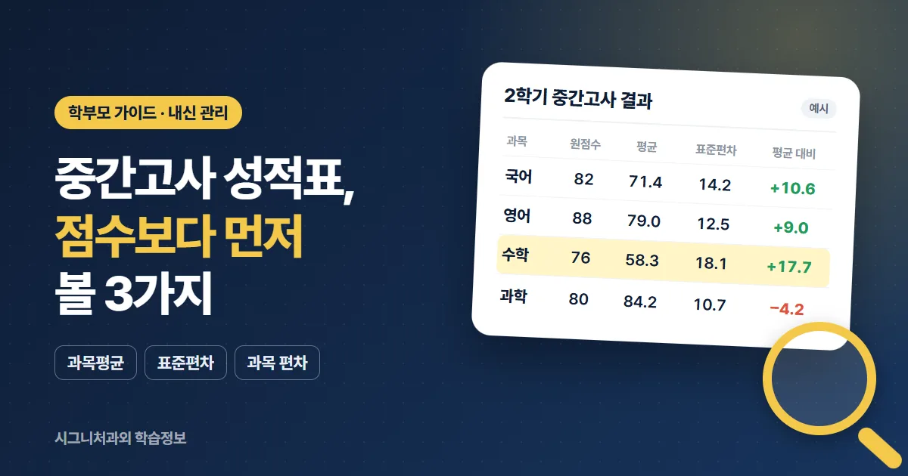
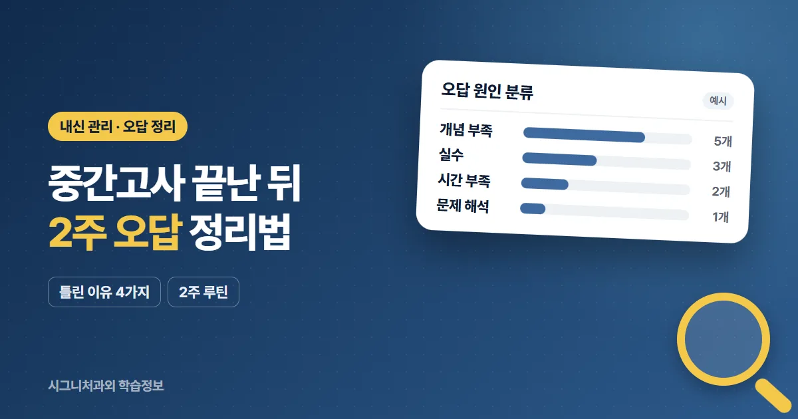
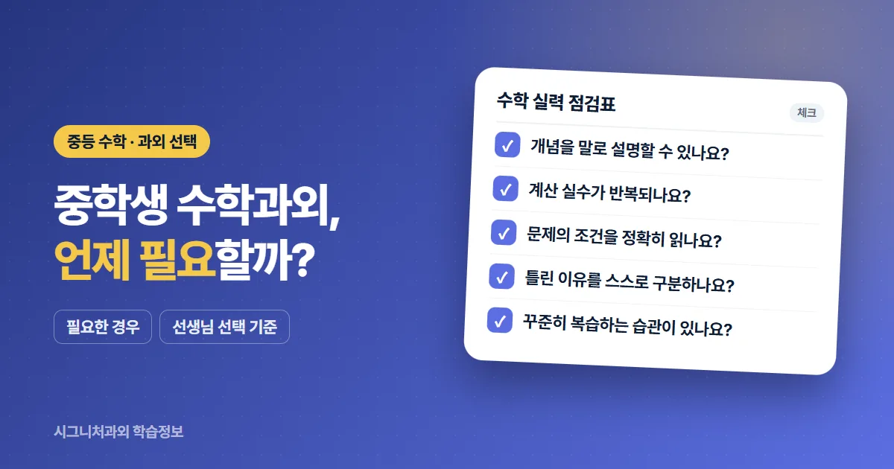
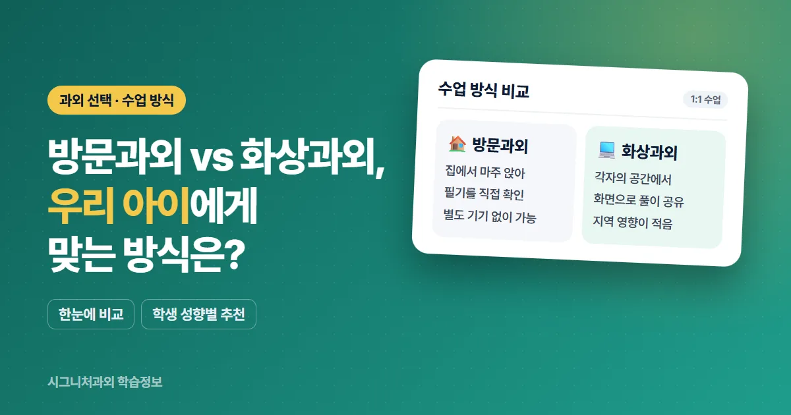

내신 관리
중간고사 성적표 보는 법, 점수보다 먼저 봐야 할 3가지
과목평균·표준편차·성취도·등급의 뜻과 우리 아이의 위치를 읽는 기준을 안내합니다.
과외를 고민할 때 확인하면 좋은 기준, 수업 방식 비교, 시험 준비 방법을 정리했습니다.
궁금한 주제의 글을 읽어 보시고, 학생 상황에 맞는 안내가 필요하면 무료 상담을 이용해 주세요.
글은 계속 추가될 예정입니다.

과목평균·표준편차·성취도·등급의 뜻과 우리 아이의 위치를 읽는 기준을 안내합니다.

틀린 이유 분류부터 2주 오답 루틴까지, 기말고사 준비로 연결하는 방법을 안내합니다.

현재 성적과 학습습관을 기준으로 과외가 필요한 상황을 정리합니다.

수업 환경과 학생 성향에 따라 각각의 특징을 비교합니다.

개념 복습부터 오답 정리까지 시험 준비 흐름을 안내합니다.